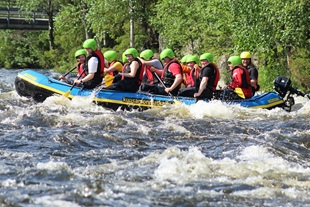
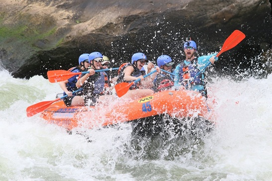

Our Rafting Adventures
Choose your perfect rafting experience
Need Help Choosing?
Our experts can help you find the perfect trip for your skill level and preferences.
Contact Us Now
Scenic River Explorer
Difficulty: Beginner
Duration: 3 hours
Price: $75 per person
Perfect for families and first-timers. Gentle rapids with breathtaking mountain scenery and wildlife viewing opportunities.

White Water Challenge
Difficulty: Intermediate
Duration: 4 hours
Price: $120 per person
Experience the thrill of Class III-IV rapids. Previous rafting experience recommended. Includes lunch break on riverbank.

Extreme Adventure
Difficulty: Expert
Duration: 6 hours
Price: $180 per person
For experienced rafters only. Conquer Class V rapids with our most skilled guides. Includes professional photography package.
Trip Comparison
| Trip Name | Difficulty | Duration | Price | Age Limit | Group Size |
|---|---|---|---|---|---|
| Scenic River Explorer | Beginner | 3 hours | $75 | 8+ years | 4-12 people |
| White Water Challenge | Intermediate | 4 hours | $120 | 16+ years | 4-8 people |
| Extreme Adventure | Expert | 6 hours | $180 | 18+ years | 4-6 people |